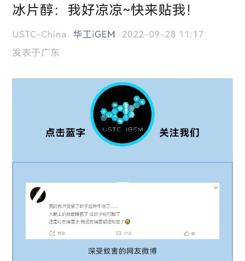
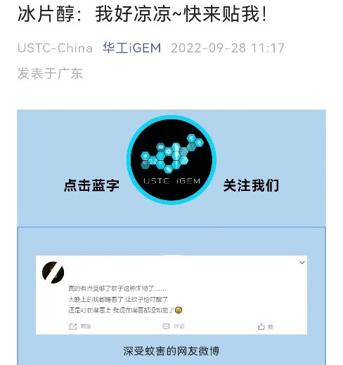

Overview
We were able to establish three wonderful partnerships this year. With USTC-China, SUStech_ShenZhen and GHYS respectively. In all three partnerships during the iGEM year, we all have unforgettable memories with each other to make our projects better. Click the logos below to see more about our journey.
Partnership-SUSTech_ShenZhen
Met in the 6th Southern China Regional meeting, we and SUSTech_Shenzhen two teams have the same track and similar downstream applications. We had been working together throughout the competition season, in addition to regular meetings, other activities are reflected in the following 4 areas: background research, safety, education, wet lab.

Fig.1 two teams met and shared their programs
In background research, we shared with them the contact information of the dyeing factory we had visited; we also shared with each other the data from the questionnaires on the public's attitude towards bioprocessing and the social acceptance of the project. In terms of safety, we discussed fabric safety, and the iGEMers from SUSTech_Shenzhen made a related public science tweet.
Fig.2 Both teams visited the Sai Hing Loong dyeing factory
Besides, the iGEMers from SUSTech shared their teaching program of tie-dye, which gave us good inspiration and reference towards the high school to start an enriching education activity.
In the wet experiment, we both conducted experiments on directed evolution. We exchanged our library building and screening methods, and evaluated each other and gave suggestions for optimization. We think that their screening method is more helpful to achieve high enrichment of positive clones, compared to our mutant library which contains both positive and negative clones. We could consider designing gene routes to link PTS positive clones and thermusaquaticus synthesis in bacteria. However, due to time constraints, it is hoped that this can be continued in the future. We also suggested that they try to visualize the positive clones and try visual characterization with the yield of Tyrian Purple to further validate and screen more positive clones in the future. We shared the detailed conditions and protocals of preliminary screening method on plate with them to design their experiments.
Fig.3 Collation of results from two teams' discussions on directed evolutionary screening methods
Before the end of the project, we sent each other pigment products to complete a beautiful downstream artwork: a drip gel handicraft, hoping that more people would learn about the magic and beauty of biology.
Fig.4 Drip artworks made using the tyrian Purple and lycopene of each of the two teams
We are very grateful to SUS_tech Shenzhen for their company and help! Click here to visit their wiki!
USTC-China
We hold an online meeting on Aug 8th with USTC-China. During the meeting, we change our opinion and share the experience about our projects.
Fig.1 Online meeting with USTC-China
After the meeting, we both decided to promote each other's projects through the two teams' WeChat official accounts. Here's the picture.
 

Fig.2 Online propagandas with USTC-China
What USTC-China give to us?
After discussion, we found that we both chose yeast as our chassis, and planned to use the MVA pathway to produce terpenoids. What's more, the USTC-China iGEMer aimed to move the MVA pathway into the peroxysome (Fig.3), in order to reduce the cellular metabolic stress.
Fig.3 metabolic pathway of USTC-China
As to our team, the promoter PDAS2 is the most prolific promoter. However, it will influence the cell growth and finally lead to the reduce of the productivity of the strain. Thus, we wanted to introduce the MVA pathway to peroxisome, as supplementary for our light-induced system. Finally, team USTC-China give their Yarrowia lipolytica with ERG19 and PTS1(peroxisomal targeting sequence) to our team, and we aimed to finish the MVA pathway together. We planned to have a deeper conversation in Guangzhou, Guangdong province on Aug 13th in our school(Fig.4).
Fig.4 A photo with USTC-China, took in South China University of Technology
As to the experiment, we chose F6HHI which already had the ability to produce patchoulol. This strain was provided by our instructor Guangjuan Luo. Based on the MAV pathway and IUP pathway, we re-constructed the metabolic pathway of the yeast and use Isoamyl enol as carbon source(Fig.5). Finally, we successfully added five enzymes to the pathway, with peroxisome tag and got the positive result.
Fig.5 Metabolic pathway of the stain
What's more, during the construction, we also met loads of problems and have twice online meeting to promote our projects (Fig.6).
Fig.6 Online meeting with USCT-China
Results are shown below (Fig.7), we can see in the figure, the strain with complete re-construct pathway shows the highest titer, which reach 37.57 mg/L. The group named F6HH-IUP means the strain with PTS that has no peroxisome tag, together with F6HHI to be as the control group. What's more, they reach 26.20 mg/L, 23.54mg/L, respectively.
Fig.7 Patchoulol titer of yeast transformants corresponding toF6HHI
What we give to USTC-China?
In our communication, we found that team USTC-China were looking for a responsible way to biosynthesize borneol with high efficiency. However, they were confused in the potential risk of pollution during production in factories. So, we gave our sequence of light-induced transcription factor and showed its mechanism to them. In the end, they designed a light-induced suicide-switch system to solve the safety problem.
As to our attempt to re-construct the pathway of patchoulol production, our IUP pathway also gave them the inspiration in Yarrowia lipolytica(Fig8).
Fig.8 Discussion about the IUP pathway with USTC-China
SCUT_HP- an Activity in Guangya High School
Partnership in modelling
Team Guangya High School (GYHS) along with SCUT-China have gone into the partnership since the first meeting in July, 2022, and communicated frequently through the follow-up offline and online meet-ups.
This year, GYHS aims at building a biosensor for pathogenetic bacterium in food and water. Based on each team's project, teammates communicated freely and discussed on the schedule for partnership. Particularly, the dry lab from SCUT offered to guide and fulfil the modelling part of GYHS.
According to the idea from GYHS, teammates from SCUT-China primarily proposed an idea of constructing a response model with the ordinary differential equation, which might take the bacteria concentration as the system input, and the color as the output. While designing the detailed modelling schedule, SCUT-China also supplements the background mathematic knowledge for GYHS, including the calculus, linear algebra and statistics.
Fig.1 Modelling discussion for GYHS's project with the help from SCUT-China
After constant chatting, teammates from GYHS held an online meeting where Nan Huang, one of the advisors from GYHS, was invited to conduct a training lesson. During the meeting, Nan Huang performed the statistics method to build a color-concentration response model for GYHS. The teammates got deeply involved in the discussion, and the dry lab from SCUT-China also participated in this communication. Although the idea of statistics method seemed deviated form the conceive of the previous suggestion, it can still be considered as a proper model to work out the problem. However, as is suggested by teammates from SCUT, once taking the unknown response reaction as a random process (here the GYHS applied the Gauss process), it is essential to make examination and validation. Both teams began further discussion according to the suggestions. Eventually, teammates from GYHS have figured out the relative concepts, and SCUT-China offered to design a cross-validation scheme for GYHS. They are looking forward for future partnership.
Partnership in HP
As our project draws to a close, we need more opportunities to publicize and gather further opinions. Therefore, we and the high school student team GYHS jointly held an activity about our two projects at Guangya High school to preach to the high school students. (Special thanks to SUSTech_Shenzhen for the Material suggestion). In the event, we set five booths which hold synthetic biology knowledge quiz, team GYHS project publicity and quiz, SCUT-China team project publicity and quiz, plant rubbing activities respectively. In each booth, you can get a plasmid puzzle by participating in the corresponding activities. After getting all the puzzles, you can get our small prizes if you correct the puzzles.

Fig.2 Both teams visited the Sai Hing Loong dyeing factory
Booth 1: Popularize synthetic biology knowledge, we have set up question cards about synthetic biology to extract and answer, and you can get a plasmid puzzle if you answer correctly.
Booth 2: Booth 2 was phage recognition and action, card form Q&A.
Booth 3: Guangya team project promotion video and Q&A, you can get a plasmid puzzle after completing it.
Booth 4: SCUT-China team project promotion video and Q&A. We prepared computers and other equipment to play the team's promotion video, and set up simple question cards based on this, you can also get a plasmid puzzle after completing it.
Booth 5: Plant rubbing activity. Using silk as the rubbing material, we purchased herbarium and material packs for participants to use (source provided by SUSTech_Shenzhen)
Fig.3 Students are guided to finish the question cards and the Plant rubbing
We have received positive feedback from high school students for our event, and it's great to see their interest in our project and synthetic biology. Besides, we also received some suggestions, such as to creating more colors of natural pigments. There is no doubt that this was a rewarding and meaningful event.